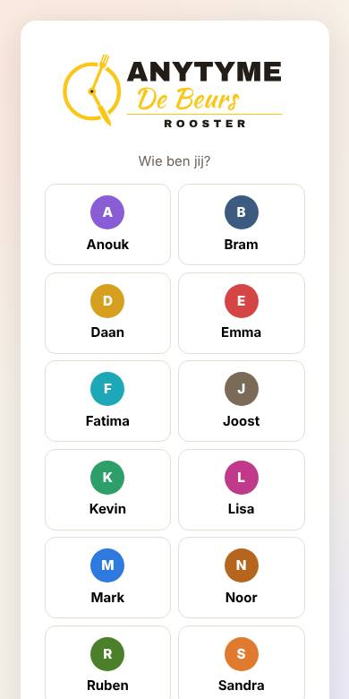
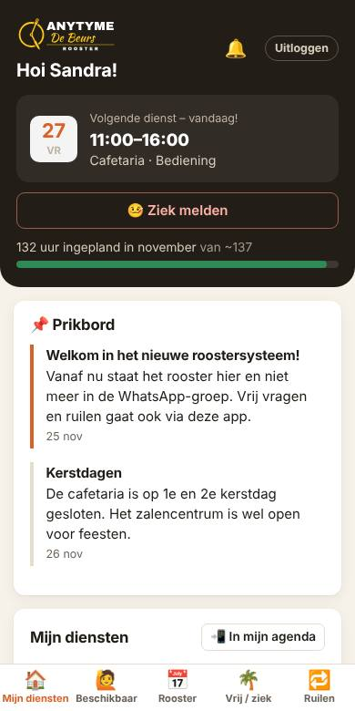
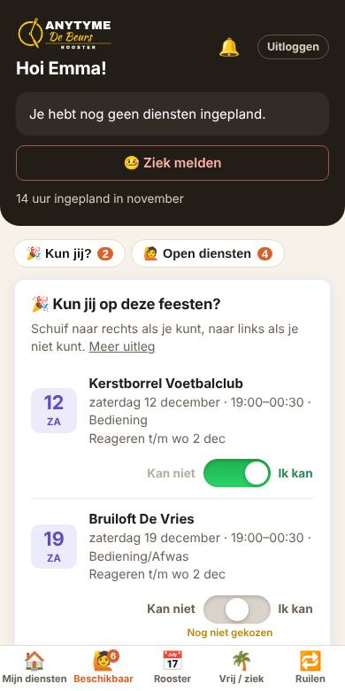
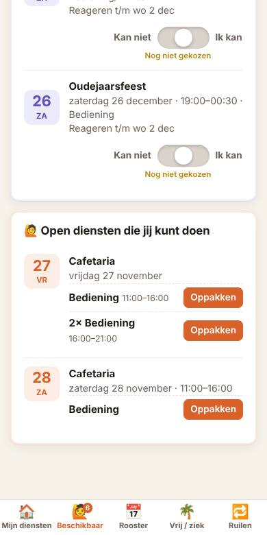
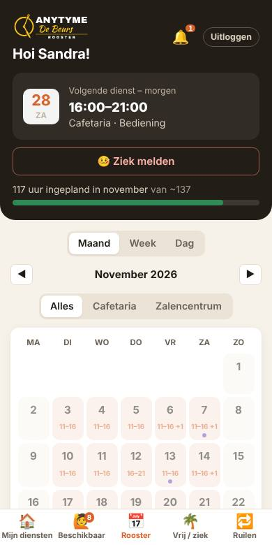
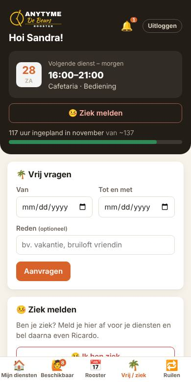
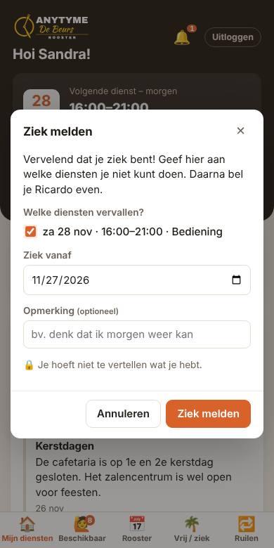
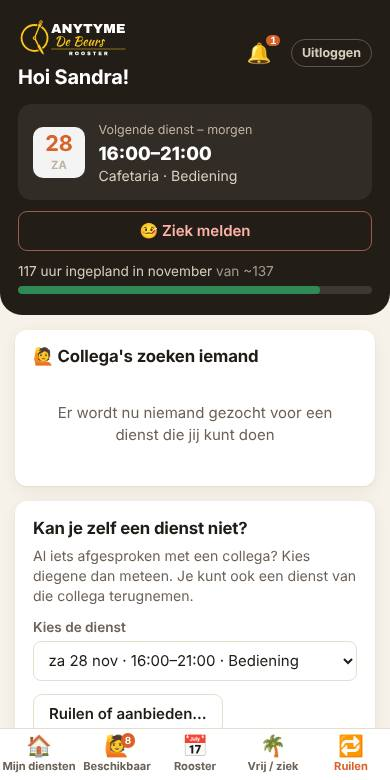

1Inloggen en app installeren
- Open de link die je van Ricardo hebt gekregen.
- Tik op je naam.
- Vul je code (PIN) in en tik op Inloggen.
- Je blijft ingelogd op deze telefoon. Je hoeft de code daarna niet steeds opnieuw in te vullen.
Zet de app op je beginscherm
- Android (Chrome): menu ⋮ → App installeren of Toevoegen aan startscherm.
- iPhone (Safari): deelknop □↑ → Zet op beginscherm. Open de app daarna altijd via het icoontje op je beginscherm.

2Meldingen aanzetten
Zet de meldingen aan, dan hoor je het meteen als:
- het nieuwe rooster klaar is;
- er een nieuw feest is waarvoor we mensen zoeken;
- een collega met je wil ruilen;
- er iets verandert aan je dienst.
- Tik op 🔔 Meldingen aanzetten (bij Mijn diensten of onder het belletje 🔔 bovenaan).
- Tik bij de vraag van je telefoon op Toestaan.
Alle berichten zie je ook terug onder het belletje 🔔 rechtsboven.
↑ naar boven3Mijn diensten
Dit zie je als eerste als je de app opent:
- Bovenaan je volgende dienst, en hoeveel uur je deze maand ingepland staat.
- Het 📌 Prikbord met mededelingen.
- Daaronder al je komende diensten.
Grijze diensten staan nog niet vast. Bijvoorbeeld een feest waarvoor je “Ik kan” hebt gezegd, of een voorlopig cafetariarooster. Je hoort het zodra het definitief is.
Met 📲 In mijn agenda zet je al je diensten in de agenda van je telefoon.

4Beschikbaar: feesten en open diensten
Hier vind je alles waarop je kunt reageren. Het getal op het tabblad Beschikbaar onderaan laat zien hoeveel er voor je klaarstaat. Bovenaan staan snelknoppen; tik erop en je springt meteen naar dat stuk.
🎉 Kun jij op deze feesten?
Voor feesten in het zalencentrum vragen we eerst wie er kan.
- Schuif naar rechts (groen) = Ik kan.
- Schuif naar links (rood) = Kan niet.
- Reageer vóór de datum bij Reageren t/m. Tot die datum mag je je antwoord nog veranderen.
Na die datum wordt het feest ingedeeld. Wie het eerst reageert krijgt geen voorrang: het werk wordt eerlijk verdeeld.

🙋 Open diensten die jij kunt doen
Diensten waar nog niemand op staat. Je ziet alleen diensten die bij jouw functies passen en waarop je vrij bent.
- Ze staan per feest of per dag bij elkaar, bijvoorbeeld 2× Bediening 16:00–21:00.
- Tik op Oppakken en de dienst is van jou. Hij staat dan meteen bij Mijn diensten.
- Staat er ⭐ nu doet Ricardo dit? Dan doet Ricardo die plek zelf, maar mag jij hem overnemen als je wilt werken.
☕ Open cafetariadiensten
Als het nieuwe cafetariarooster gemaakt wordt, zie je hier de diensten die nog open zijn. Wil je (extra) werken? Zet de schuif op Ik kan. Na de datum die erbij staat wordt het werk eerlijk verdeeld.

5Rooster: wie werkt wanneer
- Kies bovenaan Maand, Week of Dag.
- Met ◀ ▶ ga je naar de vorige of volgende periode.
- Kies Alles, Cafetaria of Zalencentrum.
- Tik in de maand op een dag om te zien wie er die dag werkt.
Je ziet het rooster pas als Ricardo het heeft verstuurd. Daarna krijg je een bericht.

6Vrij vragen
- Ga naar Vrij / ziek.
- Kies Van en Tot en met. Voor één dag vul je twee keer dezelfde datum in.
- Vul eventueel een reden in en tik op Aanvragen.
Onder Mijn aanvragen zie je of het in behandeling, goedgekeurd of afgewezen is. Je krijgt ook een bericht. Zolang het nog niet beslist is, kun je de aanvraag intrekken.

7Ziek melden
- Tik op 🤒 Ziek melden. Die knop staat bovenaan de app en onder Vrij / ziek.
- Vink aan welke diensten je niet kunt doen en vanaf wanneer je ziek bent.
- Tik op Ziek melden.
- Bel daarna altijd even Ricardo. De app laat een knop zien om hem meteen te bellen.
Je hoeft niet te vertellen wat je hebt.
Ben je weer beter? Ga naar Vrij / ziek en tik op Ik ben weer beter. Bel Ricardo om te laten weten dat je beter bent.

8Ruilen
Kun je zelf een dienst niet?
- Ga naar Ruilen.
- Kies bij Kan je zelf een dienst niet? de dienst en tik op Ruilen of aanbieden….
- Kies:
- Iedereen die kan: je dienst wordt aangeboden en wie hem als eerste overneemt, krijgt hem.
- Een collega met wie je het al hebt afgesproken: die collega krijgt een verzoek en moet het bevestigen.
- Wil je er een dienst van die collega voor terugnemen? Kies die dan ook. Dan wordt het een echte ruil.
- Ricardo keurt de ruil goed. Pas dan is er echt geruild. Tot die tijd blijft je dienst gewoon van jou.
Een collega zoekt iemand
Onder Collega’s zoeken iemand zie je diensten die een collega aanbiedt. Tik op Overnemen als je hem wilt doen. Vraagt een collega het aan jou persoonlijk, dan staat het bovenaan bij Verzoeken aan jou: tik op Ja, akkoord of Nee.

9Vragen
Ik zie mijn rooster niet.
Het rooster is waarschijnlijk nog niet verstuurd. Je krijgt een bericht zodra het klaar is. Grijze diensten staan nog niet vast.
Ik krijg geen meldingen.
Zet ze aan met 🔔 Meldingen aanzetten en tik bij de vraag van je telefoon op Toestaan. Op een iPhone: zet de app eerst op je beginscherm en open hem vanaf daar. Heb je uitgelogd? Dan krijg je op die telefoon geen meldingen meer tot je weer inlogt.
Ik ben mijn code vergeten of kan niet inloggen.
Vraag Ricardo om je code. Heb je 10 keer een verkeerde code ingevuld, wacht dan 15 minuten.
Er staat “Nieuwe versie beschikbaar”.
Tik op Bijwerken. Het duurt maar een paar seconden.
Waarom kan ik een open dienst niet oppakken?
Je ziet alleen diensten die bij jouw functies passen en waarop je vrij bent. Werk je die dag al, heb je vrij gevraagd of past de functie niet, dan staat hij er niet bij.
Ik heb “Ik kan” gezegd, maar sta niet ingepland.
Dan waren er genoeg mensen. Het werk wordt eerlijk verdeeld. Je krijgt hier een bericht van.
Op een gedeelde of andere telefoon?
Tik rechtsboven op Uitloggen als je klaar bent, zodat een ander niet in jouw rooster kan.